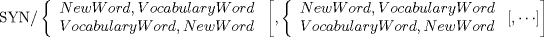

| 1.2. The Vocabulary Synonym (SYN) Statement | ||
|---|---|---|
 | Chapter 1. Language and Syntax |  |
| 1.2. The Vocabulary Synonym (SYN) Statement | ||
|---|---|---|
| | Chapter 1. Language and Syntax | |
The vocabulary word SYN is used to rename other vocabulary words. Any vocabulary word except the word SYN may be renamed. The general form of SYN is:

For example:
SYN/ PT, POINT, L, LINE $$ or SYN/ POINT, PT, LINE, L
Hereafter, in the part program, either the word POINT or the word PT could be used to designate the vocabulary word POINT. Similarly, either LINE or L could be used to designate the vocabulary word LINE.
The following rules must be observed when using the SYN statement:
The renaming of a word must occur before the use of the new word in the part program.
Only vocabulary words man be renamed.
Any symbol used in the SYN statement cannot also be used as a macro variable.
Any symbol used in the SYN statement cannot be used as a symbol elsewhere -- it can be used only as the vocabulary word to which it was equated.
A maximum of 50 vocabulary words can be renamed in any given part program.
The list order is established with the first pair (vocabulary word, new word, or new word, vocabulary word). Once established, it must be followed for additional pairs.
| |  | |
| Chapter 1. Language and Syntax |  | 1.3. Word Conventions |